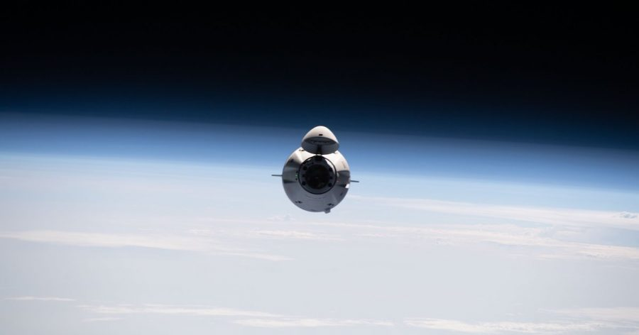

ပြီးခဲ့တဲ့ ရက်အနည်းငယ် အတွင်းက ရုရှား အာကာသ အေဂျင်စီရဲ့ အကြီးအကဲ ဒီမီထရီ ရိုဂိုဇင် (Dmitry Rogozin) က ရုရှား နိုင်ငံဟာ အမေရိကန် ကုမ္ပဏီ တွေအတွက် ဒုံးစက်တွေကို ဆက်လက် ရောင်းချပေး တော့မှာ မဟုတ်တဲ့ အတွက် အမေရိကန် တွေအနေနဲ့ အာကာသ ထဲကို “တံမျက်စည်း (broomsticks)” တွေ စီးပြီး တက်ရောက်ကြရမှာ ဖြစ်တယ်လို့ ပြောကြား ခဲ့ပါတယ်။
ဒီ ပြောကြားချက်နဲ့ ပါတ်သက်လို့ နာဆာရဲ့ အကြီးအကဲ ဖြစ်သူ ဘီလ် နယ်လ်ဆင် (NASA Administrator Bill Nelson) ကတော့ စိုးရိမ်ဟန် မပြခဲ့ ပါဘူး။ ဒါပေမယ့် အပြည်ပြည် ဆိုင်ရာ အာကာသ စခန်းကို သွားရောက်မယ့် ခရီးစဉ် တွေကတော့ အနည်းနဲ့ အများ ကသိကအောက် ဖြစ်နိုင်လိမ့်မယ်လို့ ကျွမ်းကျင်သူ တွေက သုံးသပ် ကြပါတယ်။
နာဆာကတော့ ရုရှားရဲ့ ဒီလို ခြိမ်းခြောက် စကားတွေ ကြားမှာ အနာဂါတ် အတွက် ကြိုတင်ပြင်ဆင် မှုတွေ ပြုလုပ်လျက် ရှိပါတယ်။
ပြီးခဲ့တဲ့ သောကြာနေ့က ထုတ်ပြန်တဲ့ နာဆာရဲ့ သတင်း ထုတ်ပြန်ချက် အရ အပြည်ပြည် ဆိုင်ရာ အာကာသ စခန်းကို ကုန်ပစ္စည်းတွေ ပို့ဆောင်မယ့် အာကာသ ခရီးစဉ် ၁၂ ခု အတွက် ပုဂ္ဂလိက ကုမ္ပဏီ အချို့နဲ့ ကန်ထရိုက် စာချုပ် ချုပ်ဆိုလိုက်တယ်လို့ သိရပါတယ်။
အခု ကန်ထရိုက် ချုပ်ဆိုတဲ့ အာကာသ ခရီးစဉ် ၁၂ ခုကို SpaceX နဲ့ Northrop Grumman တို့က ရရှိသွားတာ ဖြစ်ပါတယ်။ ဒီ ကုမ္ပဏီ နှစ်ခုဟာ တစ်ခုကို ခရီးစဉ် ၆ ခုစီ အတွက် တာဝန်ယူ ရမှာ ဖြစ်ပါတယ်။
အခု ခရီးစဉ် ၁၂ ခုဟာ ၂၀၂၆ ခုနှစ် အကုန်အထိ သက်တမ်း ရှိမယ်လို့ သိရပါတယ်။
ဒါဟာ နာဆာက ပုဂ္ဂလိက ဂြိုဟ်တု လွှတ်တင်ရေး ကုမ္ပဏီ တွေကို ကန်ထရိုက် ပေးတာ ပထမဆုံး အကြိမ်တော့ မဟုတ်ပါဘူး။
၂၀၁၆ ခုနှစ်က နာဆာ အဖွဲ့ကြီးဟာ ပုဂ္ဂလိက ကုမ္ပဏီ ၃ ခုကို အပြည်ပြည် ဆိုင်ရာ အာကာသ စခန်း ကုန်စည် ပို့ဆောင်ရေး အတွက် ကန်ထရိုက် ချပေးခဲ့ ဖူးပါတယ်။
၂၀၁၀ တုန်းက အဲ့ဒီ အချိန်က အမေရိကန် သမတကြီး အိုဘားမား က အာကာသ ခရီးသွား လုပ်ငန်းတွေကို ပုဂ္ဂလိက ကဏ္ဍနဲ့ လက်တွဲပြီး ပိုမို သက်သာတဲ့ ဈေးနှုန်းနဲ့ ဆောင်ရွက်သွားမယ်လို့ ပြောခဲ့တုန်းက လူတွေက မယုံခဲ့ကြပါဘူး။
ဒါပေမယ့် သူပြောပြီး ၆ နှစ် အကြာမှာ ပထမဆုံး အာကာသ ကုန်စည် ပို့ဆောင်ရေး လုပ်ငန်းကို ပုဂ္ဂလိက ကုမ္ပဏီ တွေနဲ့ လက်တွဲပြီး အောင်အောင်မြင်မြင် စတင် ဆောင်ရွက်နိုင် ခဲ့ပါတယ်။
ပုဂ္ဂလိက ကဏ္ဍနဲ့ လက်တွဲ ဆောင်ရွက်နေတာ ကုန်စည် ပို့ဆောင်ရေး တစ်ခုတည်း မဟုတ်သေး ပါဘူး။ SpaceX ရဲ့ လူလိုက်ပါတဲ့ အာကာသ ယာဉ်တွေဟာ ယခုအခါ နာဆာရဲ့ အာကာသ ယာဉ်မှူးတွေကို အပြည်ပြည် ဆိုင်ရာ အာကာသ စခန်းဆီကို သယ်ယူ ပို့ဆောင် ပေးနေပါပြီ။
အခု ၂၀၂၂ နှစ်ဆန်း အထိ နာဆာရဲ့ လူမဲ့ နဲ့ လူပါ ခရီးစဉ် စုစုပေါင်း ၃၂ ခုကို ပုဂ္ဂလိက ကုမ္ပဏီ တွေကို တာဝန် ပေးခဲ့ ပြီးပါပြီ။
ဒီ ခရီးစဉ် တွေထဲမှာ SpaceX က ခရီးစဉ် ၁၅ ခု တာဝန်ယူပြီး Northrop Grumman က ခရီးစဉ် ၁၄ ခု တာဝန်ယူ ထားပါတယ်။ ကျန်တဲ့ ခရီးစဉ် တွေကိုတော့ ဆီယာရာ နီဗားဒါး ကော်ပိုရေးရှင်း (Sierra Nevada Corporation) ကို တာဝန်ပေးထား ပါတယ်။
ဒီ ခရီးစဉ် ၃၂ ခု ရဲ့ စုစုပေါင်း တန်ဖိုးဟာ အမေရိကန် ဒေါ်လာ ၁၄ ဘီလီယံခန့် ရှိမယ်လို့ ကျွမ်းကျင်သူ တွေက ခန့်မှန်း ကြပါတယ်။
Reference: SpaceX and Northrop Grumman join forces to service the ISS through 2026 | Interesting Engineering
နာဆာ အာကာသခရီးစဉ်များ SpaceX နှင့် Northrop Grumman ကိုတာဝန်ပေး

March 29, 2022
Other Posts
- Antimatter (ဆန့်ကျင်ဒြပ်) ဆိုတာဘာလဲ
- ရှားပါး ရေဝက်များ တရုတ်ပြည်တွင် မျိုးတုန်းပျောက်ကွယ် သွားပြီ
- Wormhole တွေတကယ်ရှိလား
- ဒြပ်ထု (mass) နဲ့ အလေးချိန် (weight) ဘာကွာလဲ
- ဂြိုဟ်တုဖျက်စနစ် ရုရှား စမ်းသပ်
- ကမ္ဘာဦးက ‘ရေ’ ကို ဥက္ကာပျံတွေက သယ်ဆောင်လာခဲ့သလား
- မစ်ကီးဝေးရဲ့ ဗဟိုကိုကာရံထားတဲ့ ကိုယ်ပျောက်တံတိုင်းကြီး
- Black hole နား ကြယ်တစင်း ကပ်သွားရင် ဘာဖြစ်မလဲ
- နေအဖွဲ့အစည်း ပြင်ပက ဂြိုဟ်များ
- Hubble တယ်လီစကုပ်ကြီး၏ “စိတ်လှုပ်ရှားဖွယ် တွေ့ရှိချက်” ၃၀ ရက်နေ့တွင် တင်ပြမည်ဟု နာဆာကြေငြာ